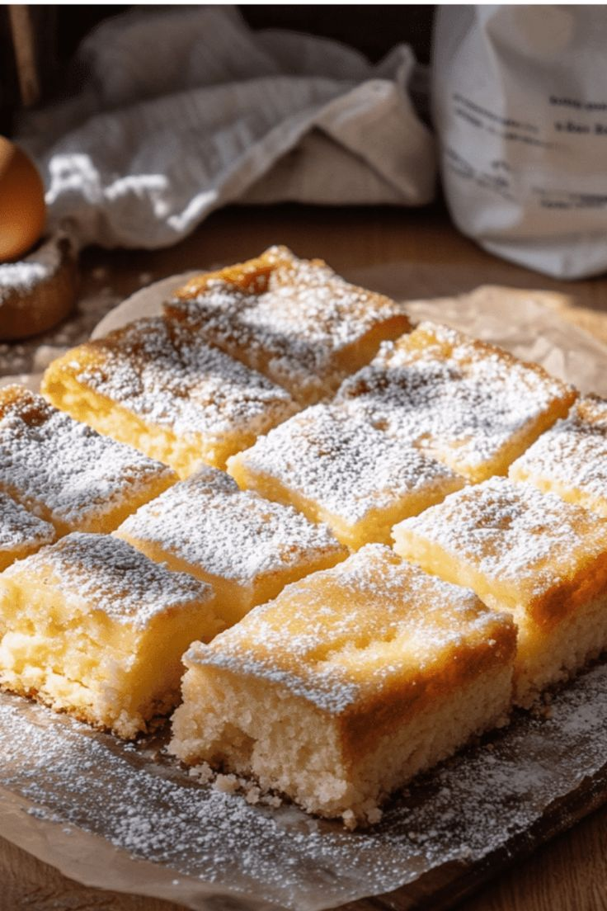

Ooey Gooey Butter Cake
Melt in your mouth buttery dessert with a yellow cake based and cream-cheese based topping that bakes into the perfect crisp.

Gooey butter cake, aka Ooey Gooey Butter Cake, is a rich, dense, and butter dessert
with origins from St. Louis, Missouri. This soft and sweet dessert has a base of
ultra-buttery yellow cake with a cream cheese-based topping, dusted with powdered sugar. It originated
in the 1930s in a baking accident where butter and flour proportions
were reversed, resulting in a sweet, mildly addictive confection that is often served
as coffee cake.
Prep Time:
10 minutes
Cook Time:
35 minutes
Total Time:
45 minutes
Servings:
18
Yield:
1 (9x13 inch) Cake
Ingredients
- 1 (15.25 ounce) Package Yellow Cake Mix
- 1/2 Cup Butter, melted
- 4 Large Eggs
- 2 tsp. Vanilla Extract, divided
- 1 (8 ounce) Package Cream Cheese
- 4 Cups Confectioner's Sugar
- 1 TBSP Vanilla
Directions
- Gather all ingredients and preheat the oven to 350 degrees F (175 degrees C).
- Mix together cake mix, butter, 2 eggs, and 1 teaspoon vanilla in a large bowl until well-combined. Pat mixture into a 9x13-inch dish.
- Mix cream cheese, remaining 2 eggs, and remaining 1 teaspoon vanilla with an electric mixer in a bowl. Slowly beat in confectioner's sugar. Pour over cake layer.
- Bake in the preheated oven until golden brown, 35 to 40 minutes. Cool before serving. Enjoy!